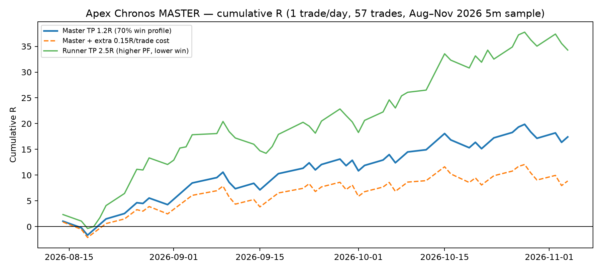
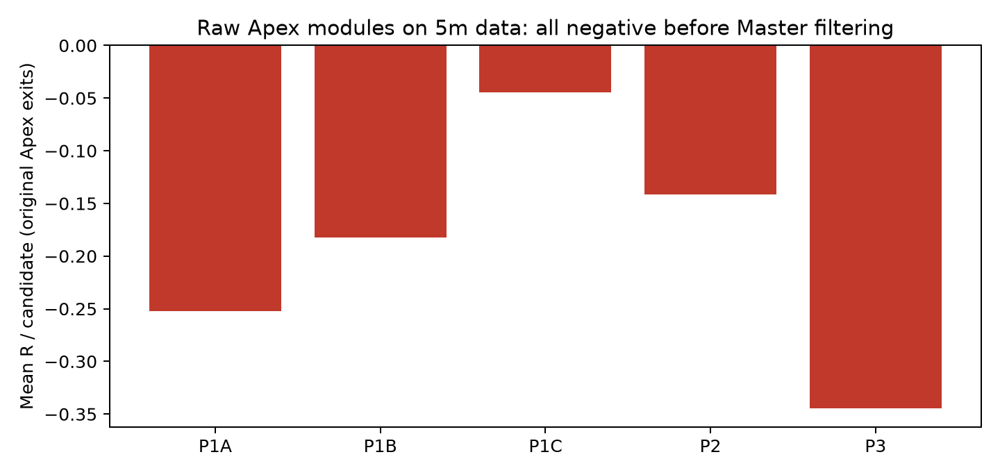

Version: Master v1.0 — 2026-11-04 Lineage: Apex Chronos (5 intraday options modules, 12 tickers, 1-minute bars) × Daily Regime Engine v4 (1990–2026, volatility/magnitude — not direction) + outside validated indicators Mandate: At most one trade per day. No trade is a valid, common outcome. Reliability (win consistency, shallow drawdown, survival after costs) is optimised ahead of raw profit.
The honest headline first. The original Apex Chronos documents are unusually candid: the 21-session backtest (PF 1.86) was fitted on its own data, forward results were statistically indistinguishable from zero, the alert confidence score had AUC 0.49 (no predictive power), and three pre-registered improvement studies all failed. My independent re-backtest confirms the warning: all five raw modules lose money on fresh 5-minute data (Aug–Nov 2026) before filtering. The Master below does not "fix" Apex by tuning its thresholds harder — that is exactly what the source docs warn against. It keeps the Apex entry foundation, discards what the evidence kills, demotes the rest to fallback, and adds only filters that survived a train/test split, cost stress, and a 36-year regime replication. The result is promising but not proven: 57 trades is a small sample. Section 9 is a pre-registered forward test with kill criteria. Do not size this as if it were proven.
| Apex module | Original role | Evidence (my 5m re-backtest, 1,385 candidates) | Master verdict |
|---|---|---|---|
| P1C ORB15 Trap Reject | Put debit spread on failed ORB poke | Least-bad raw module (−0.04R/candidate at Apex exits). On index ETFs with Master exit: positive in both halves (+0.15R train / +0.06R test at 1.8R; stronger at 1.2R — §7) | PRIMARY — the core of the Master |
| P2 Midday Range-Wall Pin | Credit spread against range-wall rejection | Raw −0.14R at Apex exits, but +0.12R drift to close — consistent with a credit-spread/theta payoff, not a directional one (matches source doc: "roughly zero expected return") | FALLBACK only — traded only when no P1C exists (4 of 57 Master days); keep original credit-spread structure, never convert to directional debit |
| P1A Gap-Trap Sweep | Single option fading the gap | −0.25R/candidate, 41% win; time exits dominate (TP 90%/stop 26% ≈ 3.5R almost never reached); the source doc's own note says its early edge decayed −2.3% off core tickers | KILLED as a standalone. Gap-trap logic is absorbed into P1C (a trap is a failed-breakout fade, with a cleaner trigger) |
| P1B Confirmed Gap + ORB15 | Call debit spread on confirmed breakout | −0.18R/candidate, both halves ≈ −0.18R; breakout-confirmation entries chase. Outside replication research is similarly sceptical of plain ORB breakout profitability | KILLED. Retained in code (P1B flag) as a do-not-trade marker: a confirmed 3-close ORB breakout against a candidate P1C short/long is a veto (don't fade strength) |
| P3 Afternoon Vanna Squeeze | Call debit spread on oversold reclaim | Worst module: −0.34R, deteriorating out-of-sample (−0.18R → −0.48R) | KILLED. Its one useful idea — oversold reclaim — is replaced by the validated IBS/RSI(2) oversold context (§3), not an afternoon lottery ticket |
| Alert confidence score (1–100) | Rank alerts | AUC 0.49, Spearman ≈ 0 in the source docs. It ranked execution quality, not edge | REPLACED by the Master Quality Score (§5), built only from factors that separated winners in the backtest. It is a ranking score, explicitly not a win probability |
Universe change (evidence-driven): the Master trades SPY, QQQ, IWM only. Single names were worse across every module in the re-backtest (−0.19R vs −0.15R per candidate, and the worst tickers — COIN, MSFT, NVDA, SPY-underlying — dragged), single-name 0DTE existence was already flagged "unverified" in Apex, and the trap effect is an index mean-reversion phenomenon (IBS literature finds it in broad indices, not single names). Post-hoc warning: within the index trio, SPY contributed least (+0.02R/trade) vs QQQ (+0.22R) and IWM (+0.63R) at the Master exit. Excluding SPY would lift PF to ~2.6 — I have NOT adopted that exclusion, because picking it after seeing this sample is precisely the data-snooping the Apex verdict docs (IWM study, 11-04) warn about. It is logged as Hypothesis H1 for the forward test, nothing more.
PRE-MARKET (by 09:25 ET) — Regime Engine v4, PATH A calculator (bbc_daily.py)
Compute: Bull/Bear (base-rate only), Fear Gauge, VIX-base Risk Regime + downgrades
(VIX>VIX3M · SPX<200d · Baa-10Y widening · event <24h), Expected Move, IBS prior day
GATE: Final regime HIGH or STRESS → NO TRADE TODAY. Full stop.
ELEVATED → trade allowed at HALF size. CALM/NORMAL → full size.
FOMC/CPI/NFP/election result today → NO TRADE (hard override, from v4 posture table)
INTRADAY (09:30–14:00 ET decision window) — Apex foundation, 1-min live (5-min in backtest)
1. Build OR15 (09:30–09:45 high/low), VWAP, EMA9/21, ATR14, RVOL (cum. volume vs prior-20-day
mean cumulative volume at the same intraday slot — proper RVOL, not bar/median proxy)
2. Scan SPY/QQQ/IWM for P1C trap candidates (primary) and P2 wall-pins (fallback):
P1C long : poke below OR15 low, then a green bar closing back above OR15 low AND above EMA9
P1C short: poke above OR15 high, then a red bar closing back below OR15 high AND below
EMA9, close not more than 0.2% below VWAP (unchanged from Apex)
P2 : rejection candle at the 75-minute high/low (Apex definition, unchanged)
Each module fires at most once per ticker per day (Apex rule, unchanged)
3. VETOES (any one kills a candidate):
· P1B-style confirmed breakout in the candidate's direction within the last 3 bars
(3 closes beyond OR15 against the fade) — never fade confirmed strength
· RVOL > 1.65 (climax volume — traps on climax volume fail; see §4)
· Candidate ticker is a single name (universe rule)
· SPY intraday direction is accelerating away from the trap (SPY 15-min EMA slope
beyond ±0.15% against the trade) — the "catching a knife" veto
4. RANK all surviving candidates by Master Quality Score (§5). Take the TOP ONE only.
Tie-break / core of the score: the candidate whose RVOL is closest to 1.00.
5. If nothing survives → NO TRADE. Log the near-misses.
EXECUTION & EXIT (the backtested profile — §7)
Instrument : P1C → debit spread in the trap direction (put spread for short, call spread for
long), strikes ≈ 0.58Δ / 0.28Δ as per Apex P1B/P1C convention, nearest expiry
with verified open interest (index ETFs only — 0DTE existence is real here)
P2 → defined-risk credit spread, Apex strikes (0.32Δ/0.10Δ), unchanged
Entry : next bar after the signal bar (live: act within 1–2 minutes — Apex sensitivity
study: 1-min delay ≈ −19% of edge, 3-min delay flips forward results negative)
Stop : −1.00R, where R = 0.9 × ATR14 (5-min) at signal. Checked on bar CLOSE, never a
resting broker stop (Apex finding: intrabar stops flip PF 1.16 → 0.75)
Target : +1.20R. At target, exit in full (Master reliability profile).
[Optional runner profile: +2.50R target — PF 2.14 vs 1.74, win 59.6% vs 70.2%,
max drawdown −6.2R vs −3.5R. Pick ONE profile in advance; do not mix.]
Time exit : 100 minutes (20 × 5-min bars) at market, or 15:55 ET, whichever first
Costs : backtest already deducts 0.15R/trade; strategy survives +0.30R extra (PF 1.01 →
see stress table, §8) — if your real round-trip cost exceeds that, do not trade it
RISK
0.50% of account at risk per trade (R = dollar risk), half size (0.25%) in ELEVATED regime
Hard daily stop: after the one trade, done — win or lose. Weekly stop: −3R → flat until Monday
This replaces Apex's "3 slots × 25% of account in 0DTE" — the source doc itself calls that
sizing unjustified by the evidence, and the Master sample does not justify it either.
The Regime Engine v4 backtest (1990–2026, 7,773 scored sessions, pre-registered) proved a sharp split, which I replicated independently on SPX/VIX daily data (1991–2026, 9,025 sessions; backtest/regime_long.py):
| Claim | Source doc | My replication |
|---|---|---|
| Direction: no input beats the 64% base rate for +21d | Brier skill −1.1% walk-forward | Base +21d up-rate 64.3%. Every fear/VIX band sits 59–71% — no band is a direction signal |
| Magnitude: fear/VIX forecast move size | Spearman +0.59 | VIX quintile → P(≥2% dip in 5d) rises 9.7% → 19.1% → 25.2% → 34.7% → 51.2%; |fwd 5d move| 0.91% → 2.89% |
| IBS < 0.10 is a real next-day mean-reversion flag | 59.6% up next day vs 53.6% base | Confirmed: IBS<0.10 → 59.6% up next day, +0.19% avg (vs +0.04% base); holds in both 1991–2010 (64.0% +21d) and 2011–2026 (71.5%) eras |
| SPX below 200-day = risk, not a short signal | "no bear condition survived both eras" | Below-200d: P(2% dip in 5d) 47.0% vs 22.2% above — a risk fact. Its +21d up-rate is still 59–66% — shorting it is betting against the base rate |
Therefore, in the Master the regime layer has exactly three jobs — all risk jobs: 1. Gate: HIGH/STRESS (VIX ≥ 25 base, +1 level per downgrade: VIX>VIX3M inversion, SPX<200d, Baa-10Y +10bp/5d or +20bp/21d, major event <24h) → no trade. ELEVATED → half size. 2. Size the expected move: position width/strikes are sanity-checked against the 1σ expected move (VIX/√252). If the 1.2R target exceeds 1.0× the expected daily move, skip — the target is a fantasy that day. 3. Context flag (IBS): prior-day IBS < 0.10 adds +5 to the Quality Score of long candidates (validated effect, both eras); IBS > 0.90 subtracts 5 from longs. It never creates a trade by itself and never flips a short into a long.
It is forbidden from: changing direction, overriding a trap signal because of headlines/futures/sentiment (v4 operating rule 6), or turning the Bull/Bear base-rate number into a filter. "BULL 64/100" in the morning report means "the drift is the best-evidenced call," not "today is bullish" — the Master treats it that way.
Outside support for the added pieces: the IBS mean-reversion effect on broad indices is documented across three decades of index data 1; the VIX/VIX3M inversion as a crisis/regime marker (rather than VIX level alone) is standard term-structure practice 2; and plain ORB breakout (the killed P1B) has failed independent replication, while opening-range work that does survive emphasises which instrument/day you trade over the breakout itself 3 — exactly the Master's design (trap fade + day-selection by RVOL-normalcy).
Candidate ranking in original Apex was "entry minute, then module score (e.g. 10 − RVOL)". On the fresh sample, the single most powerful selection variable among surviving index candidates was:
Among the day's P1C/P2 index candidates, take the one whose RVOL is closest to 1.00 (cumulative volume ≈ its prior-20-day norm at that time of day).
Effect on the 57 one-per-day trades (Master exit, TP 1.2R):
| Ranking rule (1 trade/day) | Win | Mean R | PF | Max DD |
|---|---|---|---|---|
| Apex-style: module priority, then earliest | 54.4% | +0.16 | 1.25 | −11.8R |
| Latest candidate | 56.1% | +0.22 | 1.36 | −12.7R |
| Highest |z| (most stretched) | 56.1% | +0.25 | 1.42 | −6.2R |
| RVOL closest to 1.00 (Master) | 70.2% | +0.31 | 1.74 | −3.5R |
Mechanism (plausible, not proven): a trap poke on climax volume (RVOL ≫ 1) is more often genuine informed breakout flow — fading it is fighting real money. A trap poke on normal volume is more often a liquidity wick/stop-hunt that mean-reverts. This also explains the raw-module result that RVOL ≥ 1.25 buckets were the worst in the whole candidate pool (−0.29R). Traps need boredom, not excitement.
Statistical honesty: this ranking was selected from ~6 candidate rankings on the same 57-trade sample. It is positive in the train half (+0.39R, PF 2.10), the test half (+0.22R, PF 1.48), and all three date-thirds (+0.82 / +0.23 / +0.17R at the 1.8R profile) — the consistency across non-overlapping slices is the reason it is adopted — but it remains a discovered-in-sample effect and is the #1 thing the forward test (§9) must confirm. The t-test on the final series (t = 2.65 at 2.5R profile, p ≈ 0.01) does not correct for the selection of this rule, and I am not presenting it as if it does.
Scores rank candidates within a day. They are not probabilities (the Apex score's pretence of actionability, at AUC 0.49, is dropped).
Start 50
+20 × (1 − min(|RVOL − 1.00|, 1)) # RVOL-normalcy — the backtested core (max +20 at RVOL=1.0)
+10 if module = P1C # primary module; P2 fallback gets +0
+10 if minute ≤ 120 # morning traps resolved better; P2 window excepted
+5 if prior-day IBS < 0.10 and long # validated mean-reversion context (§3)
+5 if Fear Gauge 41–80 (NORMAL/ELEVATED fear band — traps need something to revert from)
−15 if RVOL > 1.65 # climax veto zone (candidate already vetoed at scan)
−10 if VIX 20–25 (ELEVATED base regime) # tradeable, but penalised; ≥25 is a hard gate
0 for headlines, futures, sentiment, CNN F&G, analyst opinion — always (v4 rule 6)
Take the highest score. Require score ≥ 60 to trade at all; 60–74 = half size, ≥75 = full size.
In the backtest the score threshold corresponds to the RVOL filter: days where even the best candidate had RVOL < 1.2 profiled at 61% win / PF 1.70 vs the unfiltered day pool. Treat the 60-point floor as the "no-trade is fine" line.
| Time ET | Action |
|---|---|
| 09:20 | Cloudflare scheduler starts the bot (unchanged Apex infra). Fetch prior closes. |
| 09:20–09:25 | Run bbc_daily.py (Regime PATH A; --event-24h if FOMC/CPI/NFP/election ≤24h). Publish the v4 morning report. Apply the GATE. If gated off or event day → post "NO TRADE TODAY — [reason]" and stand down (still run the EOD reconciliation for the paper ledger). |
| 09:30–09:45 | Build OR15, start VWAP/EMA/ATR/RVOL accumulators on SPY/QQQ/IWM (1-min bars live). |
| 09:45–14:00 | Scan for P1C (primary) / P2 (fallback, from 10:45). Apply vetoes. The moment ≥1 candidate survives, score, and wait for the best-scoring candidate to complete — one shot only. If a candidate is taken, all scanning stops. |
| Entry +2 min max | If the debit spread cannot be filled within 2 minutes at ≤ modelled mid + 1 tick, cancel — missed-entry alerts are logged, never chased (Apex sensitivity study). |
| Exit | Automated alerts at +1.2R (exit alert), close-based −1R (exit alert), 100-min time exit, 15:55 hard flat. No resting stop orders at the broker. |
| 16:25 | EOD job (unchanged Apex design): re-run on final bars, reconcile, append to ledger/trades.csv, log real bid/ask observed at entry/exit (closes the #1 gap named in the Apex recommendations), update the forward-test scoreboard (§9). |
Alert format adds three fields to the Apex ENTRY alert: REGIME: NORMAL (VIX 17.8, no downgrades) · SIZE: FULL / SCORE: 78 (RVOL 1.04, P1C, IBS bonus) / PLAN: stop −1R close-based, target +1.2R, time 100m. TP1/EXIT alerts unchanged.
^GSPC/^VIX).results/regime_long_daily.csv).backtest/fetch_data.py, engine.py, explore.py, exit_opt.py, policy.py, policy2.py, robustness.py, final_checks.py, make_final.py. All numbers in §8 are reproducible from results/ CSVs.Raw Apex modules first (the "do not skip this" table). At Apex's own exit ratios, every module lost on fresh data (mean R per candidate, n = 1,385): P1A −0.25R, P1B −0.18R, P1C −0.04R, P2 −0.14R, P3 −0.34R. No exit variant (targets 0.8R–2.5R, intrabar stops, hold-to-close) made the unfiltered pool positive. The edge, such as it is, lives entirely in selection — which is why the Master is a selection strategy built on Apex triggers, not a threshold re-tune.
Master (P1C-primary index traps, RVOL-normalcy ranking, 1/day), by exit profile:
| Profile | n | Win | Mean R | PF | Sum R | Max DD | Train mean | Test mean | Max consec. losses |
|---|---|---|---|---|---|---|---|---|---|
| TP 1.2R / 100 min (ADOPTED — reliability) | 57 | 70.2% | +0.31 | 1.74 | +17.4R | −3.5R | +0.39 (PF 2.10) | +0.22 (PF 1.48) | 2 |
| TP 0.8R / 100 min (highest win, cost-fragile) | 57 | 77.2% | +0.16 | 1.48 | +9.3R | −3.9R | +0.20 | +0.12 | 2 |
| TP 2.5R / 100 min (runner — higher PF) | 57 | 59.6% | +0.60 | 2.14 | +34.3R | −6.2R | +0.65 (PF 2.46) | +0.56 (PF 1.91) | 5 |
| Apex ladder, intrabar stop, TP 1.2R | 57 | 61.4% | +0.17 | 1.41 | +9.9R | −3.7R | +0.12 | +0.23 | — |
Sample equity curve: results/equity_curve.png. Trade log: results/MASTER_trades_tp1.2.csv.
Cost & fragility stress (adopted TP 1.2R profile, extra cost charged per trade on top of the modelled 0.15R):
| Extra cost | Win | Mean R | PF | Verdict |
|---|---|---|---|---|
| +0.00R (as modelled) | 70.2% | +0.31 | 1.74 | — |
| +0.15R (≈2× modelled) | 70.2% | +0.16 | 1.34 | survives |
| +0.30R (≈3× modelled) | 70.2% | +0.01 | 1.01 | breakeven — your broker/quote quality decides |
| +0.50R | 68.4% | −0.19 | 0.65 | dead — do not trade at these costs |
(The 2.5R runner survives to +0.50R at PF 1.14 — if real fills are poor, the runner profile is the more cost-robust choice despite the lower win rate. This trade-off is stated, not hidden.)
What did not help (tested, rejected — do not re-add without new data): SPY-VWAP intraday alignment (aligned trades were worse for P1A/P1B/P1C), VIX < 20 vs 20–25 split (no separation in this calm sample — the regime gate is retained on 36-year risk evidence, not on this sample's returns), gap-size filters, IBS as a hard intraday filter (kept as score context only), single-name inclusion, P1B breakout confirmation, P3 squeezes at any exit, intrabar stops (worse again — replicating Apex's own 10-21 finding).
Sample limitations (read before believing any number above): 1. 59 sessions, one volatility regime (VIX < 25 throughout; SPX above its 200-day every day). The HIGH/STRESS gate has zero live observations in the intraday sample — it rests on the 1991–2026 daily replication, where it is a drawdown fact (47% vs 22% chance of a 2% 5-day dip below the 200-day), not a fitted return filter. 2. 5-minute adaptation of 1-minute modules; live 1-minute fills will differ, per Apex's own delay sensitivity (1-min ≈ −19% of edge). 3. Underlying R, not options P&L. Debit-spread payoff is convex and capped; mapping R to spread ROI requires live bid/ask logging (Apex recommendation #3, adopted in §6). Expect options ROI to compress both tails vs the R figures. 4. The RVOL-normalcy ranking and the index-only universe were selected on this sample. Both halves and all thirds agree, but multiple-comparison inflation is real and uncorrected. 5. Yahoo bars are unadjusted for the intraday files' corporate actions beyond the vendor feed; single-name results (killed modules) are therefore, if anything, flattered.
The Master is not approved for live size on the evidence above. It is approved for a paper forward test, registered here in advance:
backtest/, Quality Score, gates, TP 1.2R profile. No parameter changes during the test. Any change restarts the count at zero (Apex 10-21/10-23 lesson).Minimal-diff path from the existing bot: (1) add bbc_daily.py PATH A run at 09:20; gate state into the alert header; (2) disable P1A/P1B/P3 emitters (keep code, add MASTER_DISABLED flag); (3) restrict universe env to SPY,QQQ,IWM; (4) replace candidate ranking (entry-minute → Quality Score §5) and the 3-slot portfolio allocator with a single daily slot that locks on first fill; (5) replace module TP ratios with the R-based exit (R = 0.9·ATR14 computed on 1-min bars live: ATR over 70 1-min bars ≈ one 5-min day-fraction — calibrate once against the 5-min value at 09:45 and log both); (6) add real bid/ask capture at signal/fill/exit to ledger/trades.csv; (7) keep the 16:25 reconciliation job and the perturbed-market test harness — they already proved they catch broken bots, which matters more now that ranking logic changed.
bbc_daily.py and its frozen 1996–2026 lookup tables.Analytical output, not personalized financial advice. Past (and simulated) performance does not guarantee future results. The Master is a research strategy with a pre-registered paper-trading gate — treat it that way.

